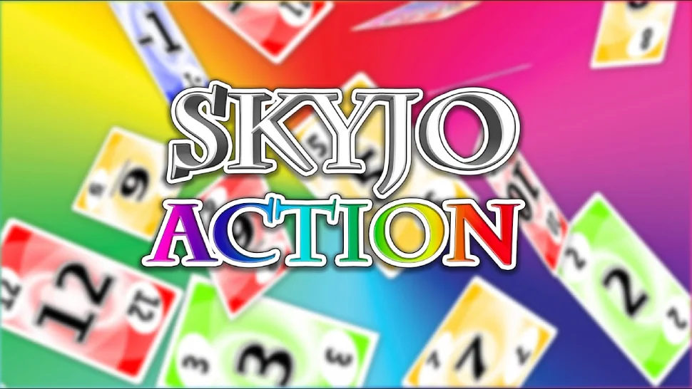

L'art de la créeation de SKYJO ACTION
Skyjo Action est la suite dynamique du célèbre jeu Skyjo, imaginée pour ajouter encore plus de fun et de rebondissements. Créé par Alexander Bernhardt, ce jeu de cartes mêle stratégie et chance autour d’un thème coloré et accessible à tous. Le but reste simple : réduire son score tout en utilisant habilement des cartes Action pour déjouer ses adversaires. Une expérience ludique qui ravit aussi bien les novices que les joueurs aguerris.
Présentation du jeu
Skyjo Action est une version améliorée et plus dynamique du célèbre jeu de cartes Skyjo, conçu pour apporter davantage de stratégie et de surprises à chaque partie. Créé pour plaire à un large public, des joueurs novices aux habitués, ce jeu combine la simplicité de ses règles avec des mécaniques qui stimulent la réflexion et l'anticipation. Les graphismes colorés et le thème léger contribuent à une expérience ludique agréable, tout en rendant le jeu facilement accessible aux enfants comme aux adultes. Il peut se jouer de 2 à 8 joueurs, ce qui le rend idéal pour des soirées en famille, entre amis ou même pour des compétitions amicales, et chaque partie dure en moyenne 30 à 45 minutes, ce qui maintient un rythme dynamique et amusant.
Objectif du Jeu
L'objectif principal de Skyjo Action est de terminer la partie avec le score le plus bas possible. Chaque joueur commence avec une grille de 12 cartes disposées en 3 rangées et 4 colonnes, toutes placées face cachée. Au fur et à mesure de la partie, le joueur doit découvrir ses cartes, les échanger ou les remplacer, en essayant de minimiser le total des points visibles. Les cartes peuvent avoir des valeurs positives ou négatives, et certaines cartes Action permettent de modifier le jeu des adversaires ou d'optimiser sa propre grille, créant un mélange de stratégie, d'anticipation et de chance. La gestion intelligente de ces cartes et la capacité à prévoir les coups des autres joueurs sont essentielles pour gagner.
Nouveautés
Skyjo Action se distingue par l'introduction des cartes Action, qui ajoutent un niveau de stratégie supplémentaire. Ces cartes peuvent etre piochées parmis les 5 cartes qui remplissent la pioche des cartes actions au milieu de la table lorsque nous piochons une carte étoiles, elles permettent, selon leur type, de réaliser différentes actions : échanger une carte avec un adversaire, révéler une ou plusieurs cartes de sa grille ou de celle des autres joueurs, ou encore annuler certaines actions et surprendre ses adversaires au moment crucial. Cette nouveauté apporte des rebondissements inattendus et oblige les joueurs à réfléchir non seulement à leurs propres cartes, mais aussi à celles de leurs adversaires. Chaque carte Action a un effet spécifique et stratégique, et savoir quand et comment l'utiliser peut totalement changer le cours de la partie, rendant le jeu à la fois imprévisible et passionnant. De plus les cartes étoiles sont une grandes nouveautés permettant de pouvoir justement disposer de cartes actions dans son jeu, elles sont également trés puissantes car elles permettent de remplacer nimporte quelle numéro d'une carte pour donc essayer de retirer une ligne ou une colonne, enfin elles valents 0 points en unité de base.La dernière nouveauté est qu'a présent nous disposons d'avoir le choix également de supprimer les lignes, cependant lorque nous décidons de supprimer une ligne ou une colonne, nous devons rester sur ce choix de suppression durant toute la manche pour les cartes restantes.
Régles du Jeu
Pour commencer une partie de Skyjo Action, chaque joueur reçoit douze cartes. Ces cartes doivent être disposées devant lui en une grille de trois rangées par quatre colonnes, toutes placées face cachée. Les cartes restantes constituent la pioche et la première carte de la pioche est retournée pour créer la défausse. Avant de commencer la partie, chaque joueur peut regarder deux cartes de sa grille afin de se familiariser avec leur valeur initiale. Le jeu se déroule par tours dans le sens des aiguilles d'une montre. À son tour, un joueur commence par choisir une carte à piocher. Il peut soit prendre la carte du dessus de la pioche, soit la carte du dessus de la défausse. Si le joueur pioche dans la pioche, il peut décider de défausser la carte ou de l’échanger avec une carte de sa grille. Si le joueur prend la carte de la défausse, il doit obligatoirement l’échanger avec une carte de sa grille. Lorsqu’un échange est effectué, la carte remplacée est placée sur la défausse. Les cartes Action peuvent être jouées pendant le tour si elles sont disponibles dans la main du joueur. Chaque carte Action a un effet précis qui doit être appliqué immédiatement selon les instructions du jeu. Certaines cartes permettent d’échanger des cartes avec un autre joueur, d’autres permettent de révéler une ou plusieurs cartes, ou d’influencer le déroulement du tour. Une fois toutes les actions réalisées et la carte piochée placée ou défaussée, le joueur termine son tour et le suivant joue à son tour. Chaque joueur continue à jouer à tour de rôle selon ce principe. La partie se termine lorsque un joueur a retourné toutes ses cartes de sa grille. À ce moment, tous les autres joueurs terminent leur dernier tour afin de retourner toutes leurs cartes restantes et compléter leur grille. Une fois toutes les cartes retournées, chaque joueur compte les points de sa grille. Chaque carte classique a une valeur comprise entre zéro et douze, et certaines cartes Action peuvent modifier temporairement ou définitivement la valeur d’une carte. Le total des points de toutes les cartes visibles constitue le score final de chaque joueur. Le joueur ayant le score le plus bas est déclaré vainqueur de la partie. Toutes les actions, pioches et échanges doivent respecter ces étapes, et chaque carte doit être jouée conformément à ses instructions. Les cartes doivent toujours être visibles lorsqu’elles sont révélées, et aucun joueur ne peut manipuler les cartes des autres joueurs en dehors des effets autorisés par une carte Action. Le jeu se déroule ainsi jusqu’à la fin de la partie, en suivant strictement l’ordre des tours, les échanges et l’application des cartes Action, jusqu’au comptage final des points et à la désignation du vainqueur.